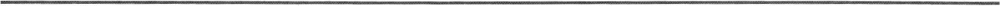
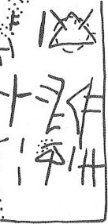

-
KH61
Names
KH61, KH 61
Support
Tablet
Location
Khania
Findspot
Unavailable


Scribe
KH Scribe 1
Context
Late Minoan IB
1500-1450 BCE
Dimensions
Catalogue
Hiraklion Museum
Readings
1 1 0 20 certain
1 2 1 1 certain
1 3 2 MA certain
2 4 3 ¹⁄₃ certain
2 5 4 OLE+TA certain
2 5 5 L2 certain
3 6 6 CYP doubtful
3 6 7 2 certain
3 7 8 GRA certain
3 7 9 1 certain
3 7 10 W certain
𐄑𐄇𐙁
𐝁𐜐𐝉
𐙗𐄈𐙉𐄇𐝍
201MA
¹⁄₃OLE+TAL2
CYP2GRA1W
𐄑
𐄇
𐙁
𐝁
𐜐𐝉
𐙗𐄈
𐙉𐄇𐝍
20
1
MA
¹⁄₃
OLE+TAL2
CYP2
GRA1W
KH 61
, page tablet (KH MUS.) (GORILA III: 82-83) (LM IB
context)
Schoep 2002, type Ia (mixed
commodities)
KH Scribe 1
|
side.line
|
statement
|
logogram
|
number
|
fraction
|
|
|
supra mutila
|
|
|
|
|
.1
|
|
]
|
20
[
|
|
|
.2
|
|
]
|
1
|
|
|
.2
|
|
MA[
|
|
|
|
.3
|
|
|
|
] B
|
|
.3
|
|
OLE+TA {*615}
|
|
L2[
|
|
.4
|
|
]
*303
+[ ]
|
2
|
|
|
.4
|
|
GRA
|
1
|
W
|
.1: ]
vest.
[ and .2 ]FIC 10[ equally possible.
.2: MA over [[QE]].
.2 perhaps: VINc before
1
MA.
Commentary © John Younger
References
papers/GORILA-Vol3.pdf#page=106